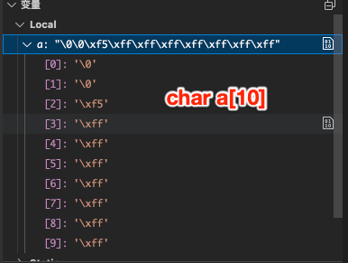
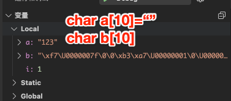
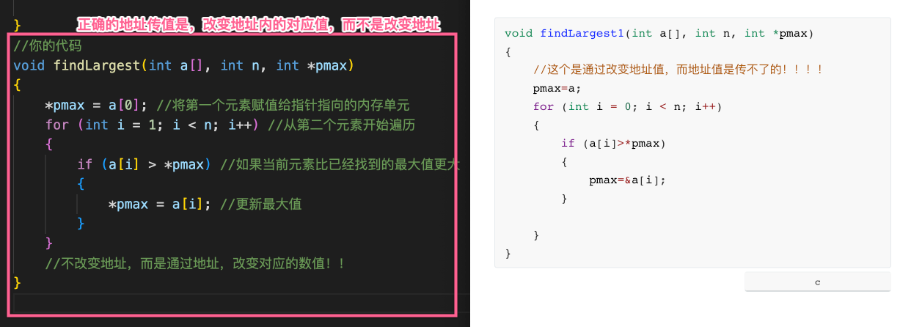
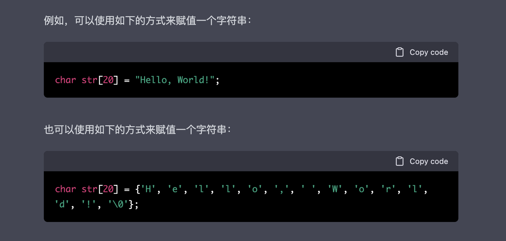
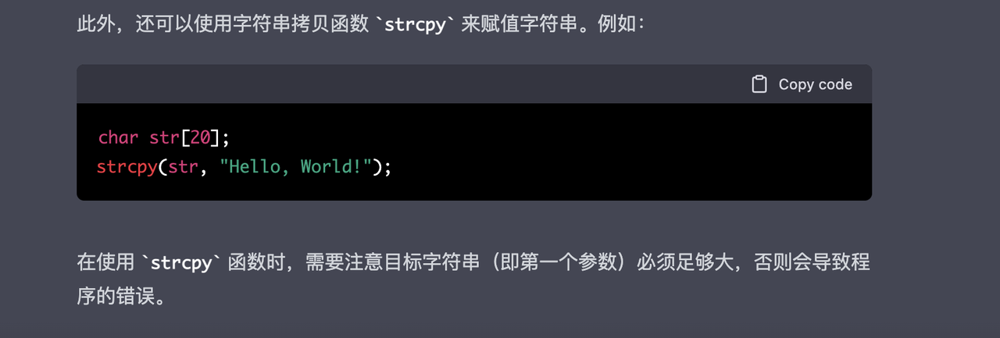

不太明白的syntax¶
1.无截止输入符号¶
如果一些题目没有截止输入的0或-1该怎么处理？
解决：用回车来截止输出。关键语句是getchar()=='\n'
int x[100];
int i = 0;
while (1)
{
scanf("%d", &x[i]);
i++;//i表示元素个数
if (getchar() == '\n')
{
break;
}
}
2.全局变量的使用ambiguous¶
问题在：使用全局变量的时候，出现ambiguous的警示怎么解决
解决：用extern来在函数内声明外部变量
// 函数外定义全局变量 x 和 y
int x;
int y;
int addtwonum()
{
// 函数内要声明变量 x 和 y 为外部变量
extern int x;
extern int y;
}
3.C语言字符串判断空¶
- 引入一个问题：
有的时候我们想判断字符串是否为空，我们可以能会想到利用NULL来判断空,但是我们利用这些，发现是不行的！那要怎么办呢？
下面呈现的是定义了一个字符数组，但是没有初始化，系统默认的随机值到底是怎么样的。
同时解释了为什么不可以用NULL来判断

- 解决：
这个时候我们可以利用函数strlen（）==0来判断字符数组是不是为空
strlen（）是判断到'\0'之前的元素有几个
4.字符串怎么一次性输出¶
-
引入问题：我们知道字符串在C中是字符数组，要想输出数组，我们第一个想到就是取索引通过for来一个个输出，但是有没有一个方法可以直接输出一个字符串呢？
-
解决：
-
通过格式化%s。
- 或者是用puts（字符串名）
5.字符串最后'\0'问题¶
引入问题：如果我们没有给一个字符串初始化，那么这个字符数组里面就是乱码，然后我们通过for一个个下标给他去赋值，它最后的下标不会是字符串结束的表示（‘\0’)
下图就是没有初始化的样子

如何解决？
-
针对没有初始化的字符串，同时给他for赋值之后，我们要用
a[最后的index]=0或者'\0'手动给加上字符串的结束标志！ -
Oj平台只能用arr【i】=0来判断是不是空
> 其实自己电脑上arr【i】='\0'是可以的 -
个人认为最佳的方式是，一开始就给他初始化,表示这个字符数组是空的。
比如char a[10]={0};//这个是把每个空间都是放‘0’，感觉有点浪费内存了
比如char a[10]="";
像这种引用数据类型，最好一开始就初始化
6.C语言中3个标准输入区别¶
gets scanf getchar
- scanf 用空格和回车作为分隔符
一个重要机制：在读取非空白字符之前遇到回车，会忽略回车，并把他从缓冲区过滤掉。
- gets 只用回车作为分隔符
一个重要的机制：遇到'\n'会把它从缓冲区过滤，也就是既不读到变量中，也不留在缓冲区。
- getchar读回车，也就是吸收掉回车的作用
这个的使用场景，当上面是scanf的读入，下面是gets的读入的时候，可以在他们中间放getchar，防止回车对后面gets造成影响
- 总结成：一个例子：
当输入'\nHello\n'时
- scanf会按照机制，过滤去第一个回车，再读取Hello，最后把第二个'\n'留在缓冲区
- gets遇到第一个'\n'会停止读取，并把第一个回车从缓冲区移走
7.C中的NULL指针¶
在变量声明的时候，如果没有确切的地址可以赋值，为指针变量赋一个 NULL 值是一个良好的编程习惯。
8.求最大公约数的误区¶
应该从后往前找，不是从前往后找
int maxDivisor(int a, int b){
int result=1;
int max;//max来记录ab中的较小的
if (a<b)
{
max=a;
}
while (1)//核心代码
{
if (a%max == 0 && b%max == 0)
{
result=max;
break;
}
max--;//从后往前
}
return result;
}
9.二维数组作为参数a[][20]¶
以二维数组作为参数的时候，必须给二维数组的第二个参数写足够大的值。
例如写成void sum (a[][20])
这是个编译器内部存在的固定翻译的问题
10.对回文数的误解¶
含义：顺读和逆读都是一样的，而不是什么对半分啥的
俩个办法
- 数字方法
#include<stdio.h>
int main()//依次从个位开始提取，然后*10+%10，最后新数和旧数比较
{
int x,newed,t,n;
while(scanf("%d",&x)!=EOF)
{
newed=0;
n=x;
do
{
newed=newed*10+x%10;
x/=10;
}while(x>0);
if(n==newed)
printf("Yes\n");
else
printf("No\n");
}
return 0;
}
- 字符串方法
注意：for循环，范围是字符串长度的一半，就可以了
11.最大公约数和最小公倍数解决¶
最大公约数：从后往前遍历
一个更优解：递归解决最大公约数
int gcd(int m,int n)
{
if(n==0) return m; //简单情况
return gcd(n,m%n); //递归调用
}
//主要思路：
// 当非负整数m，n，满足m>=n时，m和n的最大公约数，等于n和m%n的最大公约数。
// 初始条件:当n为0时，最大公约数为m。
//举个例子6 2->2 0->结果就是2
最小公倍数：俩数相乘除以最大公约数
12.对通过指针传值的误解～¶

如上左图所示：函数想要通过地址改变数值，是改变地址内的值，而不是改变整个地址值！！！
即：函数内要想通过指针传值，是改变指针地址对应的值，而不是把值的地址传给这个指针！
比如：地址0001 -> 值5
正确做法：地址0001->值8
错误做法：用8的地址0008 ，改变了原地址0001->0008
13.关于清空输入缓冲区的终解¶
简单看：在输入字符串、字符和浮点数之前，都清空缓冲区
while(getchar()!='\n');
-
通常情况下，我们在输入字符串、字符和浮点数的时候都需要清空输入缓冲区。这是因为字符串、字符和浮点数输入时都可能会读入一个回车符，而回车符会被保存在输入缓冲区中，如果不清空缓冲区，就可能会在下一次输入时读入一个回车符，导致输入错误。
-
在输入整型数时，我们不需要清空输入缓冲区。这是因为输入整型数时，不会自动读入回车符。例如，如果我们输入"1 2 3"，程序的输出结果就是"1 2 3"，而不是"123"。
14.C中字符串赋值问题¶
在 C 语言中，字符串是以 null 结尾的一维字符数组。因此，可以使用数组赋值的方式来赋值字符串。

注意，在使用第二种方式赋值时，必须手动添加 null 结尾符（'\0'），否则会导致程序的错误。
